ViT 시작하기¶
ViT로 Northwind DB(Neo4j) 연결/시작¶
본 프로그램을를 처음 사용하는데 참고할 수 있는 간략한 사용법을 설명하며, 해당 화면들은 Windows 10 운영체제에서 실행 된 화면이다. 2년차 메뉴얼에서는 TurboGraph++가 아닌 Neo4j에 생성된 northwind DB를 사용하여 진행 과정을 소개한다.
프로그램을 실행하면 WelCome 이미지가 나타나고 프로그램이 시작된다.
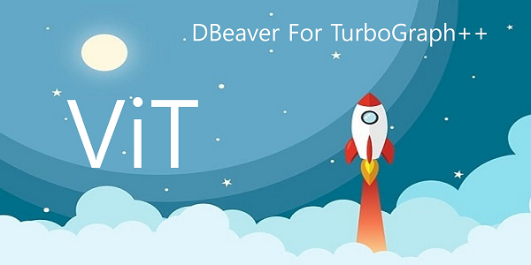다음은 Database가 연결된 항목이 아무것도 없을 경우 발생 되는 초기화면이다. 초기화면에서 database를 선택하여 연결/추가할 수 있다.
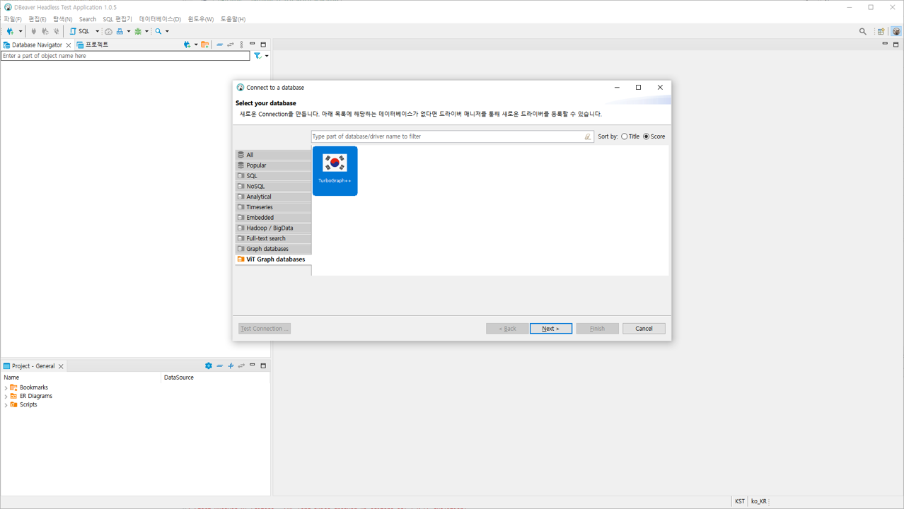Database 추가¶
초기화면에서 TurboGraph++를 선택 후 [Next]를 동작하면 아래와 같이 Connection 설정 화면으로 이동된다.
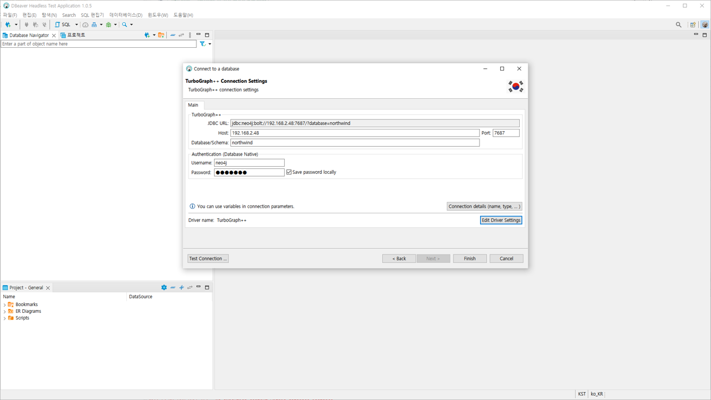Host : Host Name 또는 IP를 입력한다.
Port : 접속 하려는 Bolt 포트를 입력한다. {Neo4j Bolt Port에 기본값은 7687이다.}
Database/Schema : 접속하려는 DB 이름을 입력한다.
UserName, Password를 입력 한 후 [Test Connection] 선택하며 접속 테스트를 할수 있으며, [Next] 누르면 Database Navigator(연결 탐색기)에 추가된다.
연결 테스트¶
Test Connection 버튼을 선택하면 아래와 같이 Driver가 없을 경우에는 자동으로 Driver DownLoad Page로 이동되고 미리 입력된 URL에서 download 받을 수 있다.

아래와 같이 Download configuration을 재설정하여 다른 URL에서도 Driver를 Download 받을 수 있다.

정삭적으로 연결 되었을 경우 아래와 같은 Popup을 통해 결과가 표시된다 [OK]를 선택하면 화면이 종료되고 [Details>>] 버튼을 누르면 자세한 내용을 확인 할 수 있다.
DataBase 추가¶
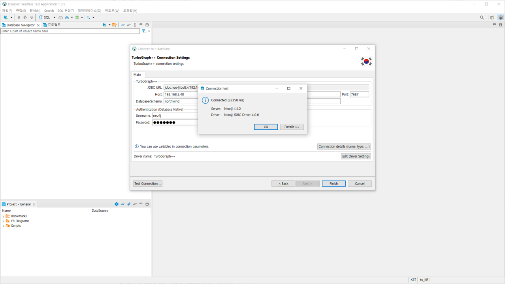연결 테스트 완료후에 [Finish]를 선택하면 아래와 같이 DataBase가 추가되고,
Database Navigator(연결 탐색기)에서 [v]을 통해 Tree를 확장하여 Node Type, Edge Type등을 확인 할 수 있다.
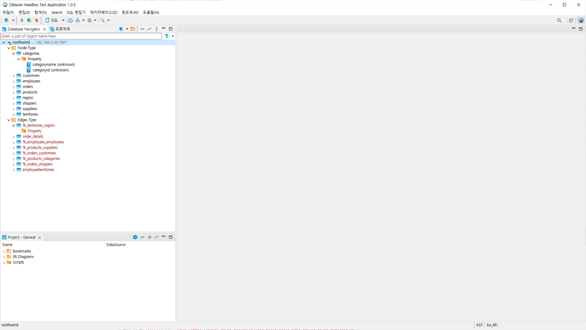SQL(GQL) 편집기¶
아래와 같이 SQL(GQL) 편집기 메뉴를 통해서 Query를 입력창 열 수 있다.
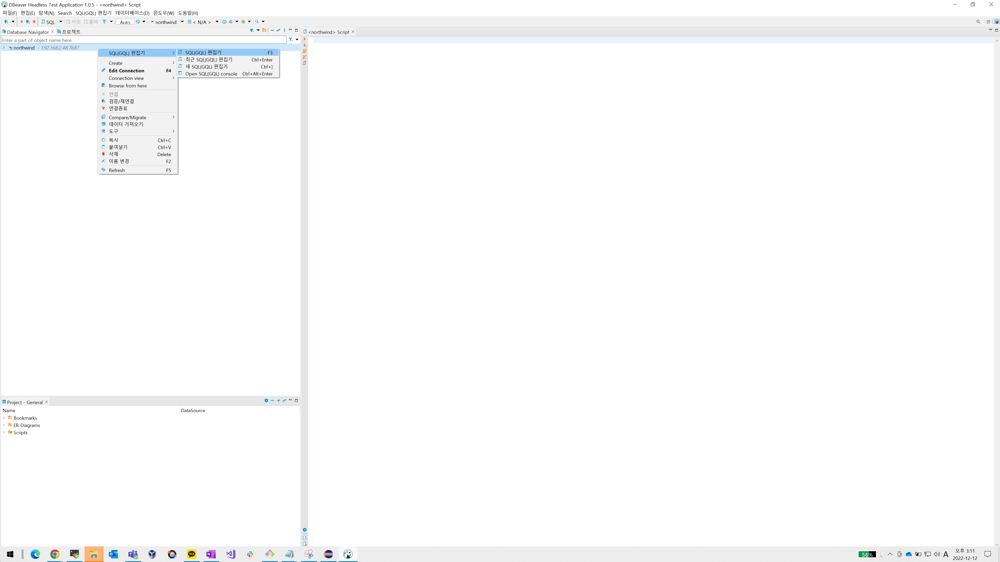Query 입력창을 통해서 Query를 입력할 수 있으며, 입력 후 [>]{SQL(GQL) 실행} 버튼을 통해 Query를 실행 할 수 있다.
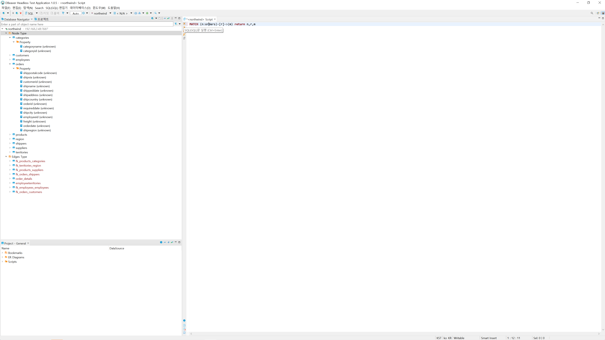데이터 결과창¶
이후 시각화 View가 표시되며 Query에서 결과 테이터를 시각화하여 표시된다.
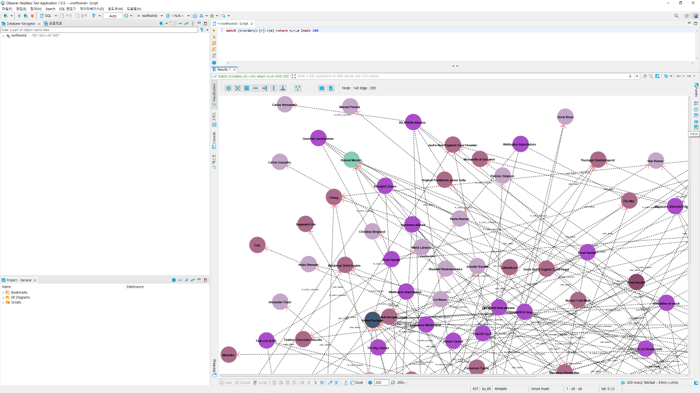또한 결과 데이터는 [Visualization]{시각화 뷰}외에
그리드, Console, 텍스트 형태로 확인이 가능하다.
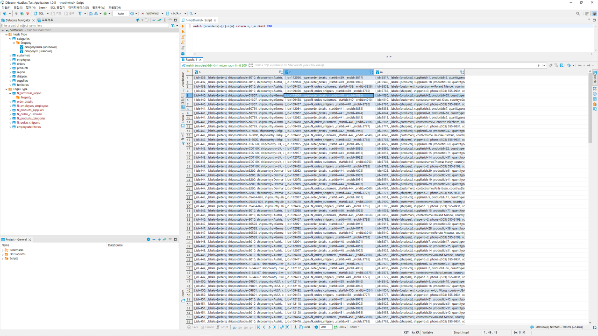 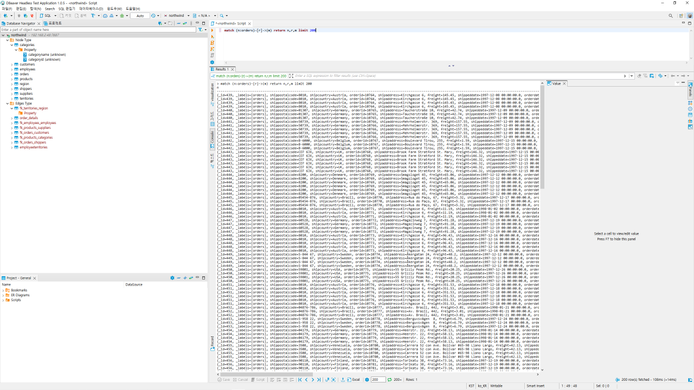 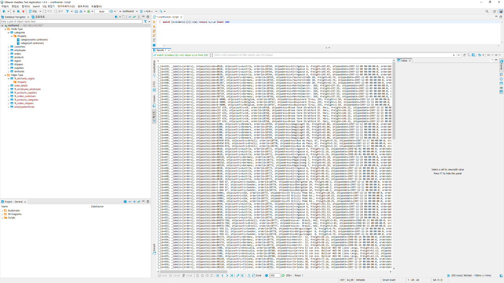Value 창으로 세부 정보 확인¶
빨간색 표시된 버튼을 통해 Value 창 표시 할 수 있으며,
마우스를 통해 Node, Edge를 한번 클릭하면 클릭,선택 된 Node, Edge 정보 (Label, ID, Propery 값)를 확인 할 수 있다.
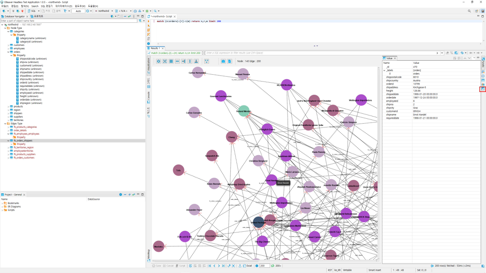HighLight 설정¶
Node를 마우스로 두번 클릭하면 선택 된 노드가 빨간색 테두리를 통해 표시된다. 마우스 오른쪽 버튼으로 팝업 메뉴를 활성화 할 수 있다. 이후 [HighLight]를 선택하면 Node와 연결 된 Edge 및 Target Node가 HighLight되어 표시 된다.
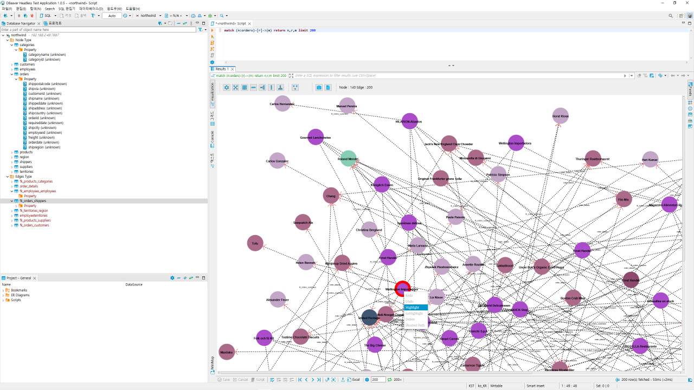 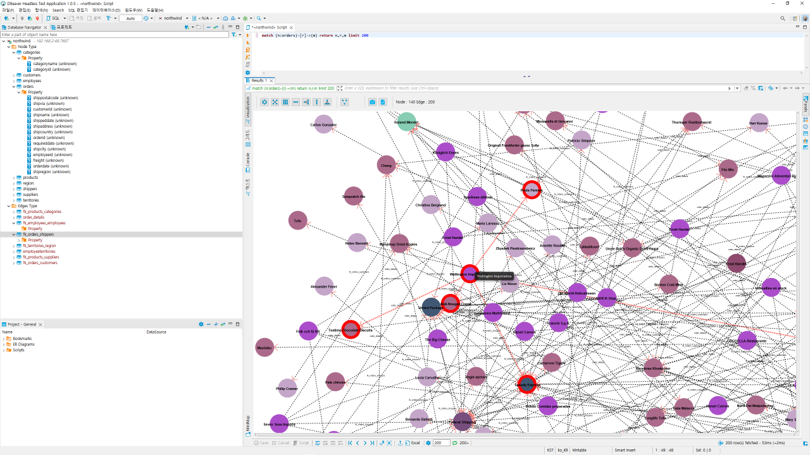HighLight 해제¶
HighLight를 해제 하기 위해서는 마우스 오른쪽 버튼은 팝업 메뉴를 활성화 한 후 [unHighLight]를 선택하거나 다른 노드를 두번 클릭하여 선택하면 해제 된다.
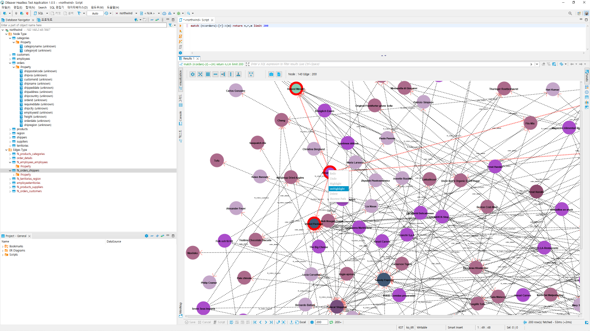
확대 축소 하기¶
아래 화면에서 빨간색 표시부분 [+],[-] 버튼을 사용하면 확대/축소가 가능하다. 또한 < Ctrl + 키보드+ >, < Ctrl + 키보드- > 를 통해서도 확대/축소가 가능하다.
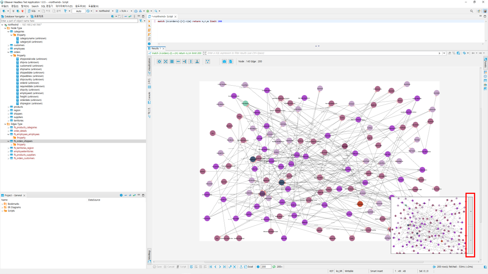
표시 데이터 개수 설정¶
아래 화면에서 빨간색으로 표시된 값에 따라 결과 Data Row 개수를 설정 할 수 있으며, Default 값는 200이다. PC 성능에 따라 개수를 조절하여 사용 할 수 있다.
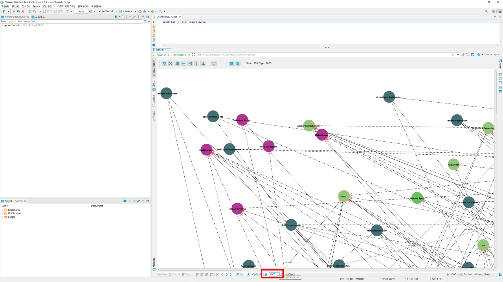